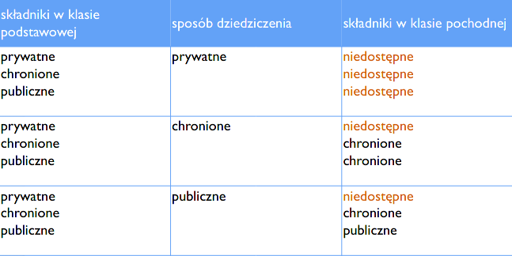
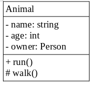

Podstawy programowania (wykłady, semester 1)
Prowadzący: dr inż. Tomasz Marciniak
Garść definicji
- program tłumaczący kod źródłowy na inny kod, najczęściej maszynowy
- taki kod maszynowy posiada adresy względne i trzeba go potraktować linkerem, aby dostać program możliwy do odpalenia
- program łączący skompilowane "pliki obiektowe" w jeden plik wykonywalny
- dołącza do pliku wykonywalnego biblioteki
- zamienia adresy względne "wyplute" przez kompilator na adresy bezwzględne
- integrated development environment
- zintegrowane środowisko programistyczne, bardzo ułatwiające programowanie
- przykładowe IDE to PyCharm, CLion i Visual Studio
- nie mylić z dyskami IDE (Integrated Drive Electronics)
- rapid application development
- narzędzia RAD to rozwinięcie konceptu IDE
- bardzo ułatwiają tworzenie na przykład interfejsów graficznych
- w narzędziach RAD interfejsy graficzne tworzy się metodą przeciągnij-i-upuść
- przykładowe narzędzia RAD to Visual Studio, C++ Builder
- application programming interface
- są to polecenia, które można wykorzystywać przy programowaniu
- dzięki ich użyciu, nasz program ma dostęp do pewnych funkcji innego programu
- na przykład dzięki API Allegro możemy stworzyć program, który kupuje coś na Allegro
Abstrakcja polega na wyodrębnieniu i uogólnieniu najważniejszych cech problemu i wyrażeniu rozwiązania właśnie w obrębie tych cech.
-
podejście proceduralne
program traktowany jako seria instrukcji i procedur działających na danych
-
podejście strukturalne
dane odseparowane od działających na nich funkcji
-
podejście obiektowe
program jest logicznie podzielony na klasy, łączące w jedną całość dane i operujące na nich funkcje
Podstawy C
-
Typy proste
- int, float, double, bool, char (i ich odmiany)
-
typy specjalne
- void - typ nieokreślony, pusty typ danych (używamy go gdy funkcja nie zwraca żadnych danych)
- wskaźnik - przechowuje adres w pamięci komputera, gdzie znajdują się jakieś określone dane
- referencja - oznaczana znakiem &, jest to numer jakiejś komórki w pamięci komputera
-
Typy złożone (składają się z innych typów)
- struct
- union
- class
- array
Uwaga, komentarzy nie wolno zagnieżdżać!
/*komentarz wielolinijkowy*
// komentarz jednolinijkowy
// standardowe wejście/wyjście
#include <stdio.h>
// dodatkowe funkcje wejścia/wyjścia
#include <conio.h>
System binarny
Reprezentacja U2
Najstarszy bit to najczęściej ten najbardziej po lewej, a najmłodszy najbardziej po prawej.
Najstarszy jest najważniejszy, bo ma najwyższą wartość. Najmłodszy jest najmniej ważny, bo ma najmniejszą wartość.
10010 - 1 jest najstarszym bitem, a 0 najmłodszym
C i C++ używają systemu U2 (kodu uzupełnień do dwóch), aby przechowywać wartości ujemne.
W takim kodzie najbardziej znaczący bit zawsze przyjmuje wartość ujemną
Więcej o tym systemie można doczytać tu: (link do artykułu)
00000010u2 = 2dec (najbardziej znaczący bit to 0, więc liczba dodatnia)
10000000u2 = -128dec (najbardziej znaczący bit to 1, więc liczba ujemna)
11111111u2 = -1dec (same jedynki w systemie U2 zawsze oznaczają liczbę -1
Operatory bitowe
- a | b
- a & b
- a ^ b
- a << b
- a >> b
Kwalifikatory znaku i długości zmiennych
signed int x; // typ x ze znakiem, taka zmienna może być dodatnia lub ujemna
unsigned int xx; // typ x bez znaku, taka zmienna zawsze będzie większa lub równa od zera
long int xxx; // normalny int jest zwykle 32-bitowy, a long int jest 64-bitowy
short int xxxx; // normalny int jest zwykle 32-bitowy, a short int jest 16-bitowy
// zamiast 'signed int' można pisać po prostu 'int'
Uwaga! Nie powinno się porównywać zmiennych unsigned ze zmiennymi signed.
Wczytywanie i wyświetlanie danych z konsoli
printf("Drukowanie na ekranie)
scanf("&d", &nazwazmiennej) // wcztytywanie danych ze standardowego wejścia i konwersja
gets(tablica) // wczytuje stringi ze standardowego wejścia do tablicy
- %s (znaki)
- %d, %04d (liczba całkowita)
- %f, %.2f, %06.2f (float)
- %x (postać heksadecymalna, hex)
- \a dzwonek
- \n nowa linia
- \r carriage return [kursor wraca na początek linii]
- \t tabulator poziomy
- \v tabulator pionowy
Instrukcje
Trzeba znać zasadę działania następujących instrukcji:- if
- switch
- for
- while
- do-while
Zmienne i ich rodzaje
int x;
int main() {
int y;
printf("%d", x); // spowoduje wyświetlenie 0 (bo zmienne globalne mają wartości domyślne)
printf("%d", y); // spowoduje błąd kompilacji, bo podjęto próbę pobrania wartości niezainicjalizowanej zmiennej lokalnej
}
register int x = 20;
Zmienne typu register z założenia są cały czas przechowywane w rejestrze procesora. W praktyce jest to jednak tylko wskazówka, dla przykładu w Windowsie nie ma możliwości utworzenia zmiennej register.
extern int x;
Zmienna typu extern to deklaracja zmiennej globalnej, która znajduje się w jakimś innym pliku.
static int x;
Zmienna typu static zachowuje swoją wartość w poszczególnych wywołaniach danej funkcji
Stałe
#define PI 3.14const float PI = 3.14;Funkcje
- Funkcje globalne
- Funkcje składowe (związane z obiektami jakichś klas)
- Funkcje wbudowane
- Funkcje zdefiniowane przez użytkownika (programistę)
// to są definicje
int dodaj(int, int);
int odejmij(int a, int b);
// to jest deklaracja
int pomnoz(int a, int b) {return a*b;}
Definicja funkcji to inaczej jej prototyp.
Makroinstrukcje – dyrektywy preprocesora działające jak funkcje (mogą przyjmować argumenty
#define DANE printf("Podaj dane użyszkodniku")
#define max(x,y) ((x)>(y)?(x):(y))
Jedna makroinstrukcja może nawet wywoływać drugą
Makroinstrukcje mogą być wielolinijkowe – wtedy trzeba umieścić znak \ na końcu linijki
- przez wartość - wartość jest kopiowana, metoda działa na zasadzie zmiennych lokalnych
- przez wskaźnik - przekazujemy wskaźnik, zmienna nie jest kopiowana, a zmiana zmiennej wewnątrz funkcji powduje zmianę zmiennej również na zewnątrz
Tablice
int elo[3] = {1, 2, 3};
int elo[3][4] = {{1,2, 3, 4}, {3, 4, 5, 6}, {5, 6, 7, 8}};
int elo2[2][2] = {1, 2, 3, 4};
- Tablica to uporządkowana kolekcja danych jednego typu.
- Tablice mogą być automatic, static i external. Nie mogą być register!!
- Tablice static i globalne są wypełniane zerami (lub ogólnie wartościami domyślnymi).
const int X = 5;
int elo[X]; // niedozwolone, trzeba użyć #define X 5
Struktury
struct pkt {
int x;
int y;
};
struct punkt {
int x;
int y;
} p1, p2; // zmienne strukturalne (globalne zmienne utworzone na podstawie danej struktury)
p1.x = 20;
struct {
int x;
int y;
} pp11, pp22; // gdy zadeklarowaliśmy zmienne strukturalne, struktura nie musi mieć nazwy
Przy definiowaniu struktury nie można zapomnieć o średniku na końcu nawiasu klamrowego!!
Wskaźniki
w = &z // przypisz do w adres zmiennej z
z = *w // przypisz do z wartość, na którą wskazuje wskaźnik w (wyłuskiwanie wartości)
w++, w-- // zwiększa adres zmiennej, na jaką wskazuje wskaźnk o 1
w1 == w2 // czy wskaźniki wskazują na te samą zmienną?
w1 = w2 // podstaw pod w1 adres zmiennej na jaką wskazuje w2
int x = 5;
printf("%d", sizeof(s));
// Wszystkie wskaźniki mają ten sam rozmiar.
wsk = 0;
wsk = NULL;
wsk = &k;
wsk = (int*) 25550; // absolutny adres w pamięci
register int x = 20;
int *wsk = &x; //niepoprawne, zmienne rejestrowe nie mają adresu
int x = 10;
int* wsk = &x;
// Gwiazdka jest operatorem dereferencji
// Powoduje zamianę wskaźnika (zamianę adresu zmiennej) na wartość przypisaną tej zmiennej
int y = *wsk; // y = 10
Wskaźniki (niezależnie do jakiego typu zmiennej) zawsze mają stały rozmiar. W przypadku aplikacji 32-bitowych rozmiar wskaźnika to 4 bajty.
Dyrektywy preprocesora
#typedef unsigned long int uli
uli liczba1, liczba2; // uli to od teraz skrócony zapis dla unsigned long int
// Dołączenie biblioteki znajdującej się w domyślnym katalogu z bibliotekami
#include <stdlib.h>
// Dołączenie kodu źródłowego znajdującego się pod wskazaną ścieżką
#include "C:\folder\plik.h"
// Dołączenie kodu źródłowego znajdującego się w katalogu z bieżącym programem
#include "plik.h"
// Makroinstrukcja
#define MAX(x,y) ((x)>(y)?(x
// Stała symboliczna
#define PI 3.14
// Stała bez zdefiniowanej wartości (patrz: podrozdział poniżej)
#define DEBUG_MODE
Warunkowa kompilacja pozwala skompilować wyłącznie wskazane fragmenty kodu. Pozwala to na przykład na programowanie programów wieloplatformowych, w których pewne linijki powinny być kompilowane wyłącznie na pewnych platformach.
#define DEBUG_MODE
#ifdef DEBUG_MODE
printf("Debug mode włączony");
#else
printf("Debug mode wyłączony");
#endif
Istnieje też dyrektywa #ifndef, będąca zaprzeczeniem dyrektywy #ifdef.
Unia
union ktk {
int x;
float y;
};
union zmien {
int x1; // 4 bajty
char zn; // 1 bajt
} zm1, zm2; // zmienne globalne, utworzone na podstawie tej unii
union {
int x;
char y;
} xoxo; // unia nie musi mieć nazwy, jeżeli ma od razu zadeklarowane zmienne
Przy definiowaniu unii nie można zapomnieć o średniku na końcu nawiasu klamrowego!!
union ktk {
int x;
char tab[4];
} xoxo = {20}; // domyślnie inicjowana wartość jest przypisywana pierwszemu elementowi, w tym przypadku elementowi int x
union tkt {
char tab[4];
int x;
} oxox = {'a', 'b', 'c', 'd'}; // w tym przypadku inicjujemy tablicę
Wszystkie dane unii są przechowywane w tym samym miejscu pamięci.
Rozmiar unii jest determinowany przez jej największy składnik. Przykładowo poniższa unia posiada wartość int (4 bajty) oraz char (1 bajt). Cała unia ma więc 4 bajty.
union zmien {
int x1; // 4 bajty
char zn; // 1 bajt
};
// Mamy taką unię o rozmiarze 4 bajtów:
union ktk {
int x;
unsigned char tab[4];
} xoxo;
// Bajty tej unii są zapisywane w komputerze w taki sposób:
[bajt o wadze 256^0] [bajt o wadze 256^1] [bajt o wadze 256^2] [bajt o wadze 256^3]
// Dokonując na przykład takiego zapisu:
xoxo.x = 255
// Ustawiamy pierwszy bajt na 255, a trzy pozostałe na zero.
// Dokonując natomiast takiego zapisu:
xoxo.x = 512
// Ustawiamy drugi bajt na 2, a wszystkie pozostałe na 0.
// Gdybyśmy pod xoxo podstawili {10, 0, 0, 8}, to w zmiennej xoxo.x znalazłaby się wartość 10 * 256^0 + 8 * 256^3, czyli 134217738.
Operacje na plikach w C
// Poniższe operacje na plikach wymagają dołączenia biblioteki obsługi standardowego wejścia/wyjścia
#include <stdio.h>
FILE *f = fopen ("test35.txt", "TRYB_OTWARCIA");
fclose(f);
Tryby otwarcia wyszczególnione są: [tutaj]
FILE *f = fopen("test35.txt", "r");
if(f == NULL) {
printf("Nie moge otworzyc pliku");
} else {
// operacje na pliku
fclose(f);
}
// fscanf, pozwala na odczyt zmiennych (jak przy scanf)
fscanf(wskaźnik_do_pliku, "%d", &zmienna_do_ktorej_wczytac);
// fgets, pozwala na odczyt kolejnych linii pliku
fgets(tablica_znakow_do_ktorej_wczytac, 100, wskaznik_do_pliku);
// przy czym 100 to maksymalna liczba znaków, jaką możemy wczytać
// fgetc, pozwala na odczyt pojedynczych znakow
fgetc(wskaznik_do_pliku);
// fread, pozwala na odczyt w trybie binarnym
fread(&zmienna , sizeof(typ_zmiennej), 1, wskaźnik_do_pliku); // gdzie 1 to ilość elementów, w przypadku tablic będzie to rozmiar tablicy
// fprintf, pozwala na zapis zmiennych (jak przy printf)
fscanf(wskaźnik_do_pliku, "%d", zmienna_którą_zapisać);
// fputs, pozwala na zapis całej tablicy znaków
fputs(tablica_znaków, wskaźnik_do_pliku);
// fputc, pozwala na zapis pojedynczych znakow
fputc(znak_do_zapisania, wskaźnik_do_pliku);
// fwrite, pozwala na zapis w trybie binarnym
fwrite(&zmienna, sizeof(typ_zmiennej), 1, wskaźnik_do_pliku); // gdzie 1 to ilość elementów, w przypadku tablic będzie to rozmiar tablicy
Więcej o operacjach na plikach w C można przeczytać (tutaj)
Zmiany w języku C++
// wymagana biblioteka
#include <iostream>
int zmienna;
cin >> zmienna;
cout << zmienna;
Zmienne nie muszą już być deklarowane na samym początku funkcji - jedynym wymaganiem jest, aby były one zadeklarowane przed ich pierwszym użyciem.
void funkcyjka(int &zmienna) {
zmienna += 10;
}
W języku C++, może być kilka funkcji o tej samej nazwie - muszą się różnić listą argumentów lub typem zwracanym.
Funkcje inline języka C++ nie powodują faktycznego skoku procesora, a powodują wstawienie danego zestawu instrukcji w miejsce wyołania.
Do zarządzania pamięcią w C trzeba było używać niewygodnych w użyciu funkcji, takich jak malloc i free. W C++ służą do tego specjalne operatory new oraz delete.
int* wsk = new int;
int* tabliczka = new int[100];
delete wsk;
delete[] tabliczka;
W C++ mamy do dyspozycji mechanizmy programowania obiektowego - nie było ich w języku C.
long double, wchar_t (wchar oznacza wide char), bool
pojawia się też typ (czy raczej klasa) string
Templates (szablony) w języku C++
Szablony umożliwiają tworzenie funkcji, które przyjmują i zwracają dane dowolnego typu.
#include <iostream>
template<class T> void printVariable(T myVariable) {
std::cout << myVariable;
}
int main() {
printVariable<int>(100);
return 0;
}
Klasy w języku C++
-
abstrakcja
abstrakcja to wolność od konkretnej implementacji; polega na wyodrębnieniu i uogólnieniu najważniejszych cech problemu i wyrażeniu rozwiązania właśnie w obrębie tych cech
-
hermetyzacja (inaczej enkapsulacja)
polega na ukrywaniu implementacji (przy użyciu słów kluczowych private); uzyskujemy dzięki temu obiekty hermetycznie zamknięte, których nie da się przez przypadek uszkodzić
-
hermetyzacja (inaczej enkapsulacja)
polega na ukrywaniu implementacji (przy użyciu słów kluczowych private); uzyskujemy dzięki temu obiekty hermetycznie zamknięte, których nie da się przez przypadek uszkodzić
-
polimorfizm
polimorfizm to inaczej wielopostaciowość; dla przykładu dwie różne klasy mogą mieć metodę drukuj(), która będzie drukowała dane, ale ich implementacje mogą być różne
-
dziedziczenie
klasy mogą dziedziczyć po sobie, co pozwala na rozszerzanie możliwości obiektu i uniknięcie duplikacji kodu
Jeśli nie zadeklarowano inaczej, pola w klasie są domyślnie prywatne.
class Point {
int x, y; // te pola będą prywatne
};
Wewnątrz klasy
class Point {
public:
void funkcyjka() {
std::cout << "jakas funkcja";
}
};
class Point {
public:
void funkcyjka();
};
void Point::funkcyjka() {
std::cout << "jakas funkcja";
}
W tym pierwszym przypadku (definicja wewnątrz klasy) kompilator automatycznie oznaczy tę funkcję jako inline.
Dziedziczenie w języku C++
- konstruktorów
- destruktorów
- operatorów przypisania
Zwróć uwagę na wywołanie konstruktora bazowego w klasie pochodnej. Jest to wymagane, jeśli klasa bazowa nie posiada konstruktora domyślnego.
class Point {
public:
double x, y;
Point(double x, double y) {
this->x = x;
this->y = y;
}
};
class ColoredPoint : public Point {
public:
std::string color;
ColoredPoint(double x, double y, std::string color) : Point(x, y) {
this->color = color;
}
};
W języku C++, w odróżnieniu do np. Javy czy C#, klasy pochodne mogą dziedziczyć po kilku klasach bazowych.
class Point3D : public Point, public ColoredPoint { ... }

Notacja UML
Trzy sekcje:
- Górna (nazwa klasy)
- Środkowa (właściwości)
- Dolna (metody)
Trzy oznaczenia:
- # → składnik protected
- + → składnik public
- - → składnik public
Typ wyliczeniowy - enum
enum Color {
RED=0, GREEN, BLUE=1000, OTHER
};
std::cout << GREEN; // wyświetli 1
std::cout << OTHER; // wyświetli 1001
Color kolorek; // zmienna która może przyjmować wyłącznie wartości {RED, GREEN, BLUE, OTHER}
Przeciążanie operatorów
class GeometricalVector {
public:
int x, y;
GeometricalVector(int x, int y) {
this->x = x;
this->y = y;
}
GeometricalVector operator +(GeometricalVector whatToAdd) {
return GeometricalVector(this->x + whatToAdd.x, this->y + whatToAdd.y);
}
};
class GeometricalVector {
public:
int x, y;
GeometricalVector(int x, int y) {
this->x = x;
this->y = y;
}
};
GeometricalVector operator +(GeometricalVector a, GeometricalVector b) {
return GeometricalVector(a.x + b.x, a.y + b.y);
}
Przyjaźń
class GeometricalVector {
private:
int x, y;
public:
friend void pokaWektor(GeometricalVector jakisWektor);
GeometricalVector(int x, int y) {
this->x = x;
this->y = y;
}
};
// Funkcja pokaWektor używa prywatnych składowych klasy GeometricalVector
// bo klasa przyjaźni się z tą funkcją
void pokaWektor(GeometricalVector jakisWektor) {
std::cout << jakisWektor.x << " " << jakisWektor.y;
}
class GeometricalVector {
private:
int x, y;
public:
// Klasa JakasCiekawaKlasa będzie mieć dostęp do wszystkich prywatnych składowych klasy GeometricalVector
friend class JakasCiekawaKlasa;
GeometricalVector(int x, int y) {
this->x = x;
this->y = y;
}
};
Słowo kluczowe static
class SomeClass {
public:
static void sayHello() {
std::cout << "hello";
}
};
int main() {
SomeClass::sayHello();
}
class SomeClass {
public:
static int ktk;
};
// Ta definicja jest wymagana, inaczej program się nie skompiluje
int SomeClass::ktk;
int main() {
// Wyświetli 0, bo zmienne statyczne są traktowane jak zmienne globalne i są inicjowane zerami
std::cout << SomeClass::ktk;
}
Funkcje wirtualne i abstrakcyjne
class Figura {
public:
// Dzięki takiemu zapisowi, klasa Figura zostanie oflagowana jako abstrakcyjna
virtual double obliczPole() = 0;
};
Wskaźniki na funkcje
double add(double a, double b) {
return a + b;
}
double substract(double a, double b) {
return a - b;
}
int main() {
double (*pointer)(double, double) = add;
std::cout << (*pointer)(10, 20); // wyświetli 30
pointer = substract;
std::cout << (*pointer)(10, 20); // wyświetli -10
}